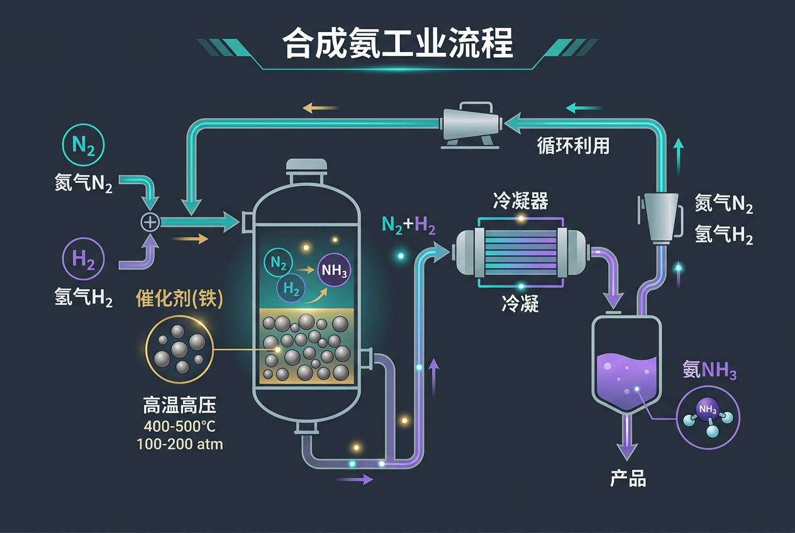
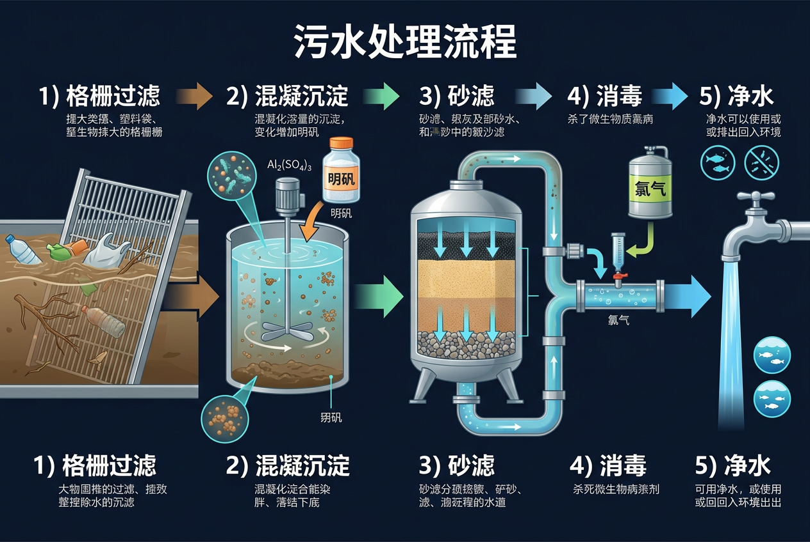

化学不仅存在于实验室，更深深融入我们的日常生活、工农业生产、环境保护和能源开发等各个领域。让我们一起探索化学的广泛应用！
先选一个你关心的问题。后面的例子、提示和 AI 学伴都会围绕这个问题来帮你推进。
选择或输入后，本课会围绕你的问题展开。
在开始前，先测试一下你对化学与生活生产的了解程度。
1. 下列哪种物质常用于食品防腐？
2. 合成氨工业对农业生产的重要意义是什么？
化学已经深深融入我们的日常生活，从洗涤、食品到医药，无处不在。
表面活性剂降低水的表面张力，去除油污。了解乳化作用、去污原理。
防腐剂、抗氧化剂、色素等改善食品品质，延长保质期。
药物合成、剂型设计、药物代谢等都需要化学知识。
合成纤维（涤纶、尼龙）的生产，印染工艺的改进。
💡 调节表面活性剂浓度和油污量，观察去污效果。表面活性剂浓度越高，去污效果越好。
现代工业离不开化学，从基础化工原料到高科技材料，化学无处不在。
哈伯-博施法合成氨，为化肥生产提供原料，解决粮食问题。
接触法制硫酸，广泛应用于化肥、农药、电池等领域。
金属的冶炼、精炼、合金制备等都依赖化学反应。
石油分馏、催化裂化、聚合反应等生产塑料、橡胶、纤维。
半导体、纳米材料、高性能复合材料等的研发。
锂离子电池、燃料电池等新能源器件的开发。

合成氨反应：N₂ + 3H₂ ⇌ 2NH₃
选择正确的答案，检验你对化学在日常生活应用的理解。
下列哪种食品添加剂主要用于防止食物氧化变质？
化学不仅帮助我们认识环境问题，更为解决环境问题提供了科学方法。
混凝、沉淀、过滤、消毒等工艺去除水中污染物，实现水资源循环利用。
脱硫、脱硝、除尘等技术减少工业废气排放，改善空气质量。
垃圾焚烧发电、填埋气收集、危废无害化处理等技术。
设计环境友好的化学产品和工艺，从源头减少污染。

污水处理的主要步骤：
化学在提高农作物产量、防治病虫害、改良土壤等方面发挥着重要作用。
氮肥、磷肥、钾肥等补充土壤养分，提高作物产量。
杀虫剂、杀菌剂、除草剂等防治病虫害和杂草。
生长素、赤霉素等调节作物生长发育，提高产量品质。
石灰改良酸性土壤，石膏改良碱性土壤，提高土壤肥力。
⚠️ 注意：化肥使用不当会造成环境问题！
选择正确的答案，检验你对化学在环境保护应用的理解。
污水处理中，加入明矾的主要作用是？
从五个角度深入理解化学与生产生活的关系。
化学不仅帮助我们理解物质变化的基本原理，更为解决日常生活、工农业生产、环境保护和能源开发等实际问题提供了科学方法。学习这些内容，有助于培养科学素养和社会责任感。
通过化学反应、物质性质、能量变化等原理：
从基础到拓展，逐步提升你的化学应用能力。
判断题：化学在日常生活中的应用
案例分析：合成氨工业的环境影响
综合设计：设计一套家庭污水处理方案
运用本节课所学知识，设计一个环保型洗涤剂的配方，并说明其去污原理和环境友好性。
任务要求：
我的设计方案：
完成本节课学习后，测试一下你的掌握情况。
1. 合成氨工业的重要意义是什么？
2. 下列哪些是化学在环境保护中的应用？（多选）
让我们一起回顾本节课的重点内容。
💡 核心思想：化学不仅是一门科学，更是推动社会进步和可持续发展的重要力量。
学习这部分内容时，同学们容易犯以下错误，请注意避免。
错误表现：
认为苯甲酸钠是抗氧化剂，或者认为维生素C是防腐剂。
正确区分：
错误表现：
认为化肥使用越多越好，忽视对环境的影响。
正确做法：
错误表现：
认为化学工业必然污染环境，不了解绿色化学的设计理念。
正确理念：
动画展示表面活性剂分子（亲水头+疏水尾）在水中自发形成胶束的三阶段过程。
拖动原子探索分子极性，理解表面活性剂的"两亲性"
洗涤剂去污原理、食品添加剂科学原理视频讲解
哈伯-博施法的工业化历程与粮食革命
表面活性剂的分类、结构特点和应用领域
查询各类化学品的性质、用途和安全信息
学习思考：
本节点的前置、后续和同域知识由标准知识图谱模块自动渲染。不要手写图谱节点。